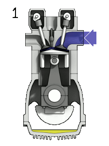

Zážehový motor
Zážehový motor je spalovací motor, u něhož je směs paliva a vzduchu ve válci zapálena elektrickou jiskrou, kterou obvykle vytvoří zapalovací svíčka. Tím se liší od vznětového motoru, kde dochází k samovznícení vstříknutého paliva samotnou teplotou stlačeného vzduchu.
Zážehové motory se nejčastěji používají v osobních automobilech, motocyklech, malých letadlech a některých typech lodí.
